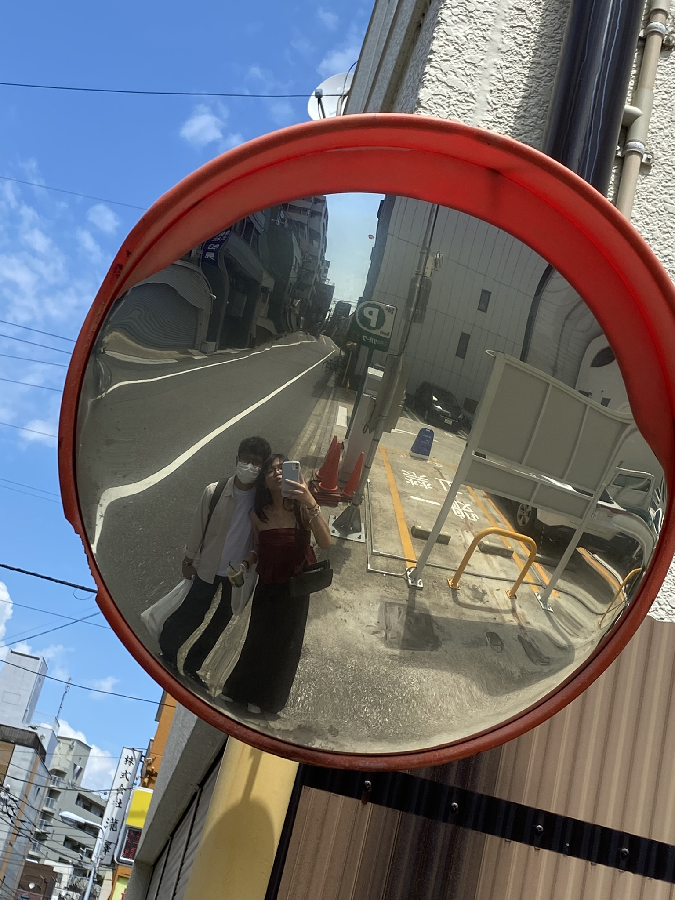

Anatomy Of A Perfect Date
What makes a perfect date? What elements are necessary to make it perfect?
Local Delicacies
Show her that you have great taste by treating her to the best melon pan in the world, a grilled unagi onigiri for something a bit unconventional, and takoyaki for a classic favorite. Finish with fresh peaches and Shine Muscat grapes for a healthy and delightful dessert. Share each dish to create a more intimate and memorable experience.
Take Selfies
Preferably in a mirror or a mirrory surface.


Take Pictures In Front Of A Tokyo Landmark; A Vending Machine
Take 50, 100 of them. #streetphotography
And get a drink. You need it.
Watch The Fireworks
A little bit of summer's what the whole year's all about.